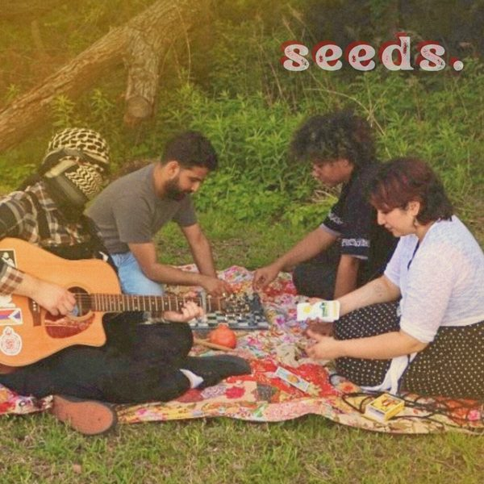

One day, I'll go back to the United States. I will do a roadtrip in that Volvo that I love, I'll listen to Martha Wainwright, Nina Simone, Lovespells, Gil Scott, Lukas Nelson, I'll scream my lungs out, I'll go to Nashville, I'll go back to Austin, I'll got to Juliette in Georgia, maybe I'll even rent a car and go to Dallas. Thelma and Louise, Little Miss Sunshine, American Honey. My Great American Dream, this Great American Roadtrip. Yeah, when I get to Dallas, I'll travel through the city in between the high school and the nearby bomb factory; I'll swallow miles and miles of runways until I choke, and maybe, eventually, I'll stop at a drive-through and revisit my favorite Starbucks drink.
America made me believe in cars and it made me believe in roadtrips. Dallas is a city in Texas that made everyone believe too; “We're not like Chicago or Amsterdam in Dallas, we're Americans!”.
They lied though, you know it, I know it. Los Angeles was a railtown, it had the best transportation system in the world. Dallas was a walkable city. Since the 1950s, the distance between their work, home and local café has stretched so much it's starting to seriously tear apart. They razed neighborhoods for parking lots. They sprawled and sprawled so you could have all these miles to eat everyday. Black and Latinx residents were four and three times as likely as white residents to live in the city's “infrastructure deserts”. Our Great American Roadtrip.
Recently, I interviewed 4 friends from Dallas who made a band. Their EP opens with Mourning Doves, with a guitar solo which would dignify any great roadtrip, one might say.
“I wish I could just fly away,
With the mourning doves
For one second I'd be okay
Far removed above
Here in Dallas we're far away
From everything we love,
Concrete jungles and highways
But nowhere to walk…
I would walk to your house,
If I could,
I'd blow up a highway
If it meant I could be near you
Infrastructure's failing cause we just wanna be close together
Tear down the roads and demolish the flyovers
The source of all wealth is nature
Reclaim the swamps and feed the rich to alligators”
This is the Pomegranates, as much a band as a pedagogical project. In between soft and airy arrangements, they might tell you about ICE, isolated workers, but more than anything else, they will slowly slip in to take you into new imaginaries. What if, you know, you didn't have to take the car to see your friend who lives 10 minutes away ? What if you could take a train ? What if you could dream without sleep ? And also : what if they didn't use spotify or apple music, what if they could make music while limiting harm ? What if they sung in 4 or 5 languages ?
The Pomegranate Seeds created a band because they needed to play music for a fundraiser for the unhoused. Since then, they have kept mixing electric guitar, the oud, spanish, Hindi, armenian, and have definitely created a soundtrack to our future coup d'État. The pomegranate seeds will grow everywhere.
Pink iPod: I always start the interview with the same question. That's the first time I interview a band, actually, so I think it's gonna be fun. What is the first song you wrote as a band?
Azad: The first one we wrote was kind of a joke. We started as friends before we were a band, and so we have a parody country song we wrote before we made anything, that is currently unreleased. It might be a bonus track one day. But our first serious song was definitely Mourning Doves. It was in one of our apartments. We all were just sitting on a floor with no furniture, trying to write a song…
PI: Can I know what the parody country song was about?
Vi: (Vi laughs) It was a country breakup song. The lyrics flowed right out of me, honestly. It's called Oh Johnny, and the chorus is like "oh Johnny, you slaughtered my heart, better than you slaughter a cow".
PI: And so you were telling me that you were friends first. Did you meet in Dallas, or were you friends before and you moved there together? Can you tell me a bit about how the band came to be in that environment?
Azad: We were all students together at one point at a university here. We were all people who are interested in making an impact in the local Dallas culture. Dallas is a very car cultured city. You really do need a car to get anywhere here, and it's full of systemic racialization with the way they build the roads. And so it was just a really easy topic to write about.
Vi: We were part of similar groups, doing some local politics kind of stuff, and became closer as friends. Actually, the way that our band came about was, we were wanting to host a concert to collect food and stuff to distribute to the local unhoused population. In order to fill out the concert list, we're like, we should form a band and perform some covers. And there we started making our own music.
PI: And were some of you making music before, not necessarily putting music out, but having a consistent music practice? And did some of you not?
Ahad: I'm actually new to the drums. Before, I played the piano for the longest, then I was in a band in high school, so I played the French horn. But I always wanted to try something new, so I decided to pick up the drums, and I had this opportunity to play with this wonderful band.
Azad: I grew up playing instruments at a very young age. Basically everyone in my family is some kind of musician, and so I did jazz band in high school. I had my own really bad indie rock band in high school as well, we don't even speak of that one. But I've always liked playing music with people.
Vi: I grew up singing. My mom's also a singer, and her entire side of the family, they all sing as well. Before I learned how to actually produce and mix and master music, I would just record whatever on GarageBand and release it, a lot, in high school. And then at some point I was like, oh my god, this sounds awful, I took all of it down. Actually, that's how Azad and I started practicing more music together. I wanted to perform a cover of Sam Smith's "Lay Me Down" for some university organization on my campus, and I knew that Azad knew piano, so I was like, let's work together. And we did a cover of Lay Me Down, and actually we interpolated the song Chknagh Yeraz, the Armenian song we included a cover of on our EP. And that was even before our country parody. And for T, T also grew up making music, especially on her computer. She had a lot of music on SoundCloud too.
PI: Could each of you develop on how you taught yourself to produce or play ? I'm especially quite interested in the production aspect of the EP, because it's a very well produced EP, and it's such an advantage as a smaller band to be able to also bring these skills. What is the importance of DIY in your musical practice as a whole?
Ahad: I was taught music my whole life, including piano and band, but I decided to draw upon that knowledge and self teach on the drums. I have considered taking lessons, but I haven't really seen them to be too terribly necessary right now. I would just YouTube videos.
Azad: I formally took piano and guitar lessons from around the time I was seven, and I stopped when I was around 16. From there on I did a lot of self-teaching. I taught myself how to play the oud, that's on Tufan. My grandfather has a very old one, it's almost 100 years old, and I learned on that. That's not the one that's on the album, because that one is very difficult to play.
Vi: For me, I grew up learning violin and flute. I liked singing too. I didn't take any formal singing classes, except when I was in musical theater for a little bit in high school. In middle school, I started using songwriting, lyric writing, as an outlet for expressing myself. In university, I took a lot of audio classes for mixing and mastering and producing. I refused to learn these things but at some point I was like, no, I do need to learn it. I study sound production now, so our EP was my final semester project. I was like, I can kill two birds with one stone here. We had a nice studio and all those nice plugins, and I used all of that to record and mix, master, and produce our EP.
PI: Mourning Doves was the first song that you wrote together. Do you have the same process for all the songs? Do you write together? Is there something where you each bring a little piece of something you wrote?
Vi: Writing process, I would say they're all kind of different. Mourning Doves, for the most part, it's collaborative. I write, I think, the majority of our lyrics, but I bounce a lot of ideas off of everybody else. Some of the music, Decatur for example, I wrote entirely by myself, because that was just a personal project that I wrote when we were going through a lot. How did we write Mourning Doves?
Azad: With Mourning Doves, we were intentionally trying to work a lot of ideas into the song, and so there were lines that, you've listened to the song, reference political theory.
PI: Definitely.
Azad: There's a Mao quote in that song. There's a reference to Marx's Critique of the Gotha Programme, that's the "source of all wealth is nature" quote. We bounce some stuff off each other, we do writing sessions, and then Vi comes up with this bulk block that we then work on a little bit together.
Vi: Yeah, because for the writing especially, we wanted it to be approachable. We are quite well read, and we love reading. We're very big on promoting self-education, education of others. We have the quotes to these really dense texts, but we also wanted the message of the song to still be clear to even someone who's not politically aware at all. I've showed some of my coworkers who don't think about politics at all, I showed them Mourning Doves and they're like, yeah, you're right, I didn't notice how unwalkable Dallas is.
PI: To bounce off of what you said about education and making these messages accessible in your songs, do you also view your band as a sort of pedagogical project, to bring people together and speak about politics?
Azad: Yes, certainly. We're very big pedagogy people. Prior to the band, we've done a lot of reading group stuff where we try to implement similar ideas that we do with the music. I really like how Vi put it earlier, it simplifies a lot of things that can be dense at first. Songs like Mourning Doves, Tufan, Escape are very on the nose about it. And then there are songs where there's a little more hidden within there, like Wheel of Fate, for instance. How do we inspire people to look deeper, research these topics for themselves? In addition to just doing it because music is fun.
PI: Why did you choose to open the EP with Mourning Doves ? What about that song felt right to be in the first position?
Azad: There's the very surface level one, which is just our first song properly made together, but we also paid attention to the way the songs flow into each other. Some of our songs exemplify certain parts of our music more than others. I think Mourning Doves encapsulates every single part. But what do y'all think?
Ahad: Yeah, I agree.
PI: You mentioned Wheel of Fate as being one of your less obvious songs earlier. What does that song speak about? And why did you make the choice to maybe make it a little less obvious than your other songs?
Vi: Wheel of Fate, that was actually unique. We had maybe the melody and the guitar solo, and we really liked those aspects, and we had no idea what to write it about. So then I was in band practice, and I have a couple of tarot decks. I don't necessarily know if I believe in tarot, but I do think it's fun. And then I took out a card. In my deck it was Wheel of Fate, but it's typically the Wheel of Fortune card. The song itself is not really related to the tarot deck anymore, but it started that way. And so we called it our poetic nonsense song. But as I started writing it, it started becoming about slowing down and being more present in the moment. It starts like, “look outside, see the droplets on your window pane, see those marks, drive in the last time it rained, some things don't change”. Notice the small details around you, because rain happens all the time, and those marks stayed, but it's such a minute detail that you don't really notice. It was also becoming a reminder to myself. I'm a highly anxious person, I've never relaxed a day in my life. And in the chorus, especially, “because I didn't see the snow was falling down until I tripped and hit the ground”. That especially hit harder for us. We used to live much closer to each other, and I think this is your story.
Azad: Yeah. Recently we all had to move a bit further from each other. And I remember I had the CD of the Seeds EP in the car. I was driving home from that old place for maybe the last time, and I heard that "I didn't see the snow was falling down until I tripped and hit the ground" line, and I was like, oh my god. We were taking all this for granted for so long, and now it's changing.
Vi: And then the last line, "when I look up at the sky, all I see is a wheel of fate shining down on me". I kind of abstracted the meaning of a wheel of fate to be the sun. The sun comes up and comes down every day. That's why it didn't originally have that much of a political meaning either. But as it gains more meaning for us over time, for me it feels more like being present and slowing down, so you can notice the things around you. That includes things like, oh, this is not walkable, there's not as much transit. If you're so in your head and focused on the future or the past, there's so much that you're missing in the present, and you're unable to actually meet your own needs and the needs of other people.
PI: The way I interpreted the song at first was quite political, because I thought it was a song about the politics of distraction, and how you can not notice all these things, not notice your own city is completely unwalkable.
Azad: Yeah, I really like that. There were parts of the songwriting process where we got into that a little bit, how it's about waking up to conditions.
PI: Because the line "I didn't see the snow was falling down", for me was like, how can you not see the snow is falling down? Something so big. And I thought the tension with that sentence was kind of where the politicalness also came from.
Azad: The song that gets into that as well is actually Tufan. Because the meaning of Tufan is ignoring these issues, especially the way migration is politicized in the U.S. It's something that, when it starts to affect more socially cared about groups, then they talk about it. People started really talking about that in the United States in 2026. In our experiences, we've all been affected by related things in 2025, when this was not an issue in popular discourse. This has been going on since 2001, that's when the United States established ICE. They'll only actually talk about these things as issues when it serves them politically, to grift off of it. So I think Tufan and Wheel of Fate, regarding their political meaning, have a very similar strand.
PI: The personal meaning is also super interesting, obviously, but the fact that they tie together is actually a good coincidence.
Vi: Yeah, we wanted to stay consistent with the imagery we were using. We say snow a lot in Wheel of Fate, and then we reference snow a lot, but still have a different meaning, in Escape. And then snow in Tufan is obviously ICE itself, because it's just frozen water. We referenced mountains quite a bit too, in Escape, in Tufan, and actually in Chknagh Yeraz, there's that little radio announcement in the beginning, it's like, oh, there's avalanches. Chknagh Yeraz is just an old Armenian love song, but we really liked the song and wanted to include it on the EP. So then that intro was a way of tying it in thematically to the EP.
PI: In one of your posts about Escape on Instagram, you reference Mark Fisher's Capitalist Realism. Escape, if I'm getting it right, is the story of a worker who is isolated and then finds community to get out of the capitalist structure. And I guess Fisher has a big thing on imagination. And I was wondering if music, and writing that song, also helped you reimagine the future and society as a collective, and if music is a tool to force your brain to imagine a way out ?
Vi: Yes, for sure. Music is something that most people engage with, so it can be very effective propaganda, and it should be used as a tool for propaganda. A lot of people listen to music as a form of escapism. They want to feel comforted, they want to feel heard by the music. Not all of our music has to have a happy ending or a message about community, because some things just do suck. But we make it a point, with Mourning Doves and Escape, to find that there is a hopeful message. People will avoid politics because they want to continue being able to escape those conditions and ignore it, because it's overwhelming. And we want to make it a little less overwhelming for the average person to engage with politics.
PI: Why did you put Tufan as a demo on the EP, and where did the idea of also making it multilingual come about?
Vi: We have a drum part for it, but we didn't have enough time to record it, and we also have a different bass part that we didn't have time for recording. So to supplement that, I created a really ambient bass to fill out the song. And I also created the sound effects, the storm. The thunder claps, we recorded a slap of a cajón, and then I re-recorded it multiple times, pitched it down, and added a bunch of effects. In our future album, we definitely do want to re-record it with full drums and bass, which is why it's a demo.
Azad: And even more instrumentation as well. I really want to get some saz on that, maybe some strings.
PI: And the different languages, how did that come about?
Azad: We'd already done a very small element of that on Escape, during the chorus, just for a few lines. But then we expanded upon it within Tufan. Not only does it reflect the linguistic diversity in our band, but what really inspired it at the time was the ever increasing breadth and scope of the recent ICE backed deportations.
Vi: In Tufan, English is used as the main narrative device, and then the different languages are used as the first hand experiences. So there's an English verse and then there's a verse in Hindi. That verse in Hindi translates to, listen, listen here, this is what's happening to us. Look here, look here, the storm that's approaching. And then there's another English verse and then the verse in Armenian after that.
Azad: It's the exact same lyricism, but slightly tweaked, because I wrote that part. It's hard to translate Armenian directly to English, but it's like the storm is upon us. It's a very archaic, poetic way of saying that.
Vi: And then there's another verse in English and then the verse in Spanish. That part translates to, help me, help me, the ice storm has taken my kids and the houses are destroyed, and I'm here playing because I don't want to cry. And so that part, we start getting more on the nose with what the song's about. The first part, you can interpret it as a cautionary tale about these storms destroying these communities. In the second half of the song, we're talking about ICE specifically, and the violence that ICE has enacted against people and communities. The beginning of the second part is, "they paid no mind when the storms remained down south, the sirens only blared when the winds are howling near their house". Azad touched on this earlier, but people only really cared about ICE more recently, after they killed a citizen. But ICE has been putting kids in cages at the southern border for decades. It doesn't matter if it's the Republican or Democrat. People are trying to simplify ICE to a Republican issue, when kids were at the border under Obama as well. Both parties are inherently invested in the institution of ICE, because both parties are invested in the institution of America itself. At the end of the song, this is not an issue of, we can vote this out. This is an issue of, we need a complete societal restructure, aka revolution.
PI: And inserting these other languages is also a way to reframe the mind and the perspectives on the subject.
Azad: Yeah, specifically focusing on perspectives outside of just the English speaking world. People assume English as a default language. In organizing spaces, a lot of relevant information about things like ICE is only actually put out in English. And for the people who this will really affect the most, that just doesn't make sense. We have a lot more language stuff coming in the future as well. Among all the members of our band, there's probably four to five languages we can get in there.
PI: And just to keep it on Tufan for a little bit more, what does the title mean, actually?
Azad: Storm. In both Armenian and Hindi.
PI: Oh wow, that's beautiful.
Azad: It's a word of Persian origin, and then it entered both languages through the Sassanid empire.
PI: And how did it feel for you, Vi, to sing, and to learn how to sing, in languages that some are yours and some are not?
Vi: I find it really fun. It's challenging, for sure, because I want to get it right. But what's been really helpful is, Azad knows Armenian, I know English and Hindi, and I know a little Spanish, and then our bassist T, she knows Spanish, so she's also able to help me with Spanish pronunciation, and especially singing in it. With everything else, like Armenian, that's mainly something that Azad has been helping me with, so I just repeat after him constantly and then learn it. And it's also way more common. A lot of these Armenian artists are singing in multiple languages. They sing in Armenian and Arabic and French and English. A bunch of Hindi singers also sing in a bunch of other Indian languages. And so I want to take on that practice as well.
PI: Chknagh Yeraz, dream without sleep. That's so beautiful. And I was wondering why you wanted to put this production on it, for it to be kind of TV like. What about it was interesting to you, and also the little piece at the beginning that introduces the song?
Vi: That was actually a last minute decision, because I had been sitting on the recording of the vocals, the drums and the piano for a while. It just seemed really simple to me, and I wanted to dress it up a bit. Originally I was gonna mix it so it sounded like you were in a live bar, listening to the band. I actually did that for one of my projects in school, a parody of The Sopranos. But after I did that, I was like, I don't think I want to do something like that for the EP. That little radio announcement in the beginning, I recorded that on a Copperphone, which is just an old microphone that has that old radio sound. So then I was like, mixing it to sound like it's coming out of this old janky radio, I just thought that was really fun. I'm just an audio nerd too, so I was like, this will be a fun mixing challenge.
PI: And can you tell me a bit more about what other music you were listening to while you were making the EP, individually or collectively?
Azad: I listened to a lot of blues, old American blues, as a kid when I was learning guitar. I'm talking Eddie Boyd, Freddie King, and the way they play guitar was very influential on the solo parts I did. And I was also listening to this Armenian artist, he's actually a family friend of mine, Vicken Tarpinian. He lives in Marseille. His style of guitar playing, a lot of that fingerpicking stuff, definitely was a source of inspiration for me, especially on Wheel of Fate. Even Tufan, the style of the oud part is how he plays.
Vi: I was getting kind of back into Sade, and I was listening to Hayley Williams's new album. And Pom Pom Squad, they also had an album lately. A lot of Hindi music. But I do think the kind of music I listen to and the kind of music I make are quite different.
Ahad: At the time, when we were writing Escape, I was just learning drums. So I just introduced a lot of really rock and roll type fills into it. Green Day, and Muse is a big one, actually, because the drummer is very, very good, and I'm not at that level yet.
PI: Where do you find inspiration in an unwalkable city, and maybe just in the capitalist system in general? Where do you find the beauty and the creative power to create?
Ahad: When I was helping put the draft up of the lyrics for Escape, I think it mirrored a lot of the way that I was feeling. I had recently just been living on my own, and I was thinking, in an urban environment where there's so many people around you, probably about 20% of the people will look at you and say hi. It's almost seen as a bad thing to make eye contact. You're like, oh, sorry, I'm not supposed to look. Everyone is so alienated from each other even though we're so close together. How can that be, and more importantly, how can that be different?
Vi: For me, especially with Mourning Doves, living in an unwalkable city, and I only recently have learned to drive, I can't go anywhere unless someone takes me. But also just looking at all the highways and the flyovers, and there's so much concrete everywhere, I'm like, oh my god, it's so ugly. But every now and then, it's kind of like Stockholm syndrome, I drive on it so much. These flyovers suck, but they're kind of beautiful in a weird, twisted way. You have to find things that you like. Even if I hate these flyovers, I'm still going on them because I want to see my friends, and I want to be in proximity with other people. I want the barriers not to exist anymore.
PI: Making an EP costs money, or you do a lot of it yourself. How do you try to structure the band and its potential profits or costs in a way that feels fair to you?
Vi: We spent no money on the EP. No way.
PI: Wow.
Vi: I was doing it as my senior project, so I was fortunate to use the school resources, and T and I were mixing all that, so we did everything ourselves.
Azad: Lots of resource sharing too. We didn't have a bass, and we borrowed a friend's bass.
Vi: So we spent zero dollars. (Well TECHNICALLY tuition :P)
PI: As a band that's chosen not to put their music on the mainstream streaming platforms, how do you manage the fact that you still have to be on social media to advertise that music?
Azad: It ties back to the whole idea, especially within Marxism, of how much participation within a system is tolerable. For us, it's about impact of use versus impact of harm. Spotify screws over artists. Spotify is ruining music as a concept. They push AI songs over legitimate artistry. They pay artists nothing. They're invested in defense companies. It's not that Instagram is great either, but Instagram allows us to promote things for free to a very wide audience of especially young people. And we've had success without using Spotify. We've had things blow up. We've had people buy CDs. We've even raised money for mutual aid recently using the band earnings, to do a distro in our community.
PI: I think you have a friend called Raf , who is trying to make a collaborative album for the children in Gaza. Where is that project, is it out yet?
Azad: We've been working on that recently. Our piece for that is not completely fleshed out yet. We're interpolating the melody of an Arab classical song about Gaza. If you know the Lebanese composer Marcel Khalife, it's one of his melodies that we're building on, which is specifically about walking proudly in the face of occupation. We've got a completely different musical setup and lyricization. We're hoping to get that done pretty soon, so stay tuned.
PI: And would you see yourself building a similar project, for this cause or another one, as a band, to be the instigator?
Vi: Yeah, maybe. There's one project I really want to get off the ground. I really want to do a concert in Dallas and sell CDs, and have those sales go towards a distro that we do for unhoused people here, especially around the train stations. That way also tying in the trains, it's thematic to our music, but also giving back. Something else we're working on is this artist who reached out wanting to make prints based on our music. They didn't want any money for themselves, but a portion of the sales would go back to their community, because they teach art, and they buy materials that they give to young kids and adults with disabilities to be able to do art. If our band is able to make more money through our music, distributing that wealth to the causes that we support is also really cool.
PI: If you had an infinite amount of money and time and means, what would be your dream venue?
Azad: I'd love to play at the Byblos Theater. It's this 2,000 year old amphitheater in Lebanon. It's a Roman amphitheater, so it looks like the Colosseum. So many cool people have played there. Even just in a minimalistic way, any kind of show there would be fire.
PI: And finally, what's one book you'd recommend to understand your EP, or to just give it more layers?
Azad: It's so hard to pick one. For me at least, I'd say On the National Question, İbrahim Kaypakkay. Amazing book about the concept of national struggle and how it ties in with socialism. A lot of our songs have underlying themes about it, especially in regards to things like colonialism.
Vi: A really good book, and we reference it a bit too, is Araling Aktibista, or ARAK. It's a study from the Filipino communists. A big thing in it is SICA, social investigation, class analysis. Doing investigation in your local area, trying to analyze the class dynamics, to then be more effective with your practice. That is a really underlying concept with all of our stuff, where we do the social investigation and class analysis through our music. What about you, Ahad?
Ahad: I don't have a specific book in mind. But to be honest, just take a good look at the world around you. There's biases and all those things, but if you try and piece it together, you'll figure out that things don't make sense.
Azad: All the contradictions. You should look at the snow falling down.
PI: I think that's a great closing. Thank you so much. I'm so excited to see what you do next, and I will be harassing my friends for them to listen to your EP for a long time.
Vi: Thank you so much for interviewing us. It was great.

go and listen here